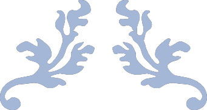

ضایعات فصل ۳
بهروزشده با سوالات ملی، دستیاری، بورد و ارتقا (۱۳۹۸ تا ۱۴۰۳)
+ اکسیر آبی (نویل ۲۰۱۶) و DDQ (نویل ۲۰۲۴)
پالپیت برگشتپذیر
- تماس با ترشی و شیرینی میتواند باعث تحریک شود.
- پاسخ به سرما شدیدتر از گرما؛ لقی و حساسیت به دق ندارد؛ به تست الکتریکی با جریان پایینتر پاسخ میدهد. (اکسیر، DDQ)
- درد هنگام جویدن ← معمولا cracked tooth یا ترمیم معیوب؛ اگر پوسیدگی، شکستگی و ترمیم معیوب نباشد ← حساسیت عاجی را در نظر بگیر. (اکسیر)
نمای میکروسکوپی 🔬
- پرخونی (hyperemia)، ادم، ارتشاح آماسی مزمن در زیر توبولهای عاجی صدمهدیده (ملی۱۳۹۹)
- امکان مشاهده عاج ثالثیه در مجاورت دیواره عاجی درگیر
پالپیت برگشتناپذیر
- ممکن است درد خودبخودی و مداوم باشد و هنگام دراز کشیدن تشدید شود.
- ممکن است بیمار قادر به تشخیص دندان دردناک نباشد.
- درد پالپی هرگز از خط وسط نمیگذرد و میتواند از قوس فکی به قوس فکی دیگر ارجاع داده شود. (اکسیر، DDQ)
- مراحل اولیه: درد شدید بعد از محرک حرارتی؛ پاسخ به تست الکتریکی در جریان پایینتر. مراحل بعد: گرما درد را زیاد و سرما تسکین میدهد؛ تست الکتریکی در جریان بالاتر یا بدون پاسخ. (اکسیر، DDQ)
- معمولا لقی و حساسیت به دق ندارد؛ با درناژ، علائم متوقف میشود. (DDQ)
- بررسی هیستوپاتولوژی پالپیت تاثیر مهمی در درمان ندارد. (DDQ)
نمای میکروسکوپی 🔬
- احتقان وریدها (congestion) (DDQ)
- نکروز موضعی ← تجمع نوتروفیل (PMN) و هیستیوسیت؛ بهتدریج نکروز، فیبروز و ارتشاح مخلوط پلاسماسل، لنفوسیت و هیستیوسیت (اکسیر، DDQ)
نکروز پالپ
- به تست الکتریکی و تحریکات حرارتی پاسخ نمیدهد. (اکسیر)
- طیف علائم گسترده: ممکن است بدون علامت باشد یا درد حاد داشته باشد؛ گاهی حساسیت هنگام گاز گرفتن. (اکسیر)
پالپیت هایپرپلاستیک مزمن (پولیپ پالپ)
- در کودکان و بالغین جوان
- شایعترین دندان درگیر: مولر دائمی و شیری (DDQ)
- اگر اپکس باز باشد احتمال نکروز کمتر
- دندان بدون علامت است مگر تحت فشار جویدن قرار گیرد.
- تحریکات مکانیکی و یا تهاجم باکتریال با ایجاد التهاب مزمن سبب ایجاد پولیپ پالپ میشود.
نمای میکروسکوپی 🔬
- بافت جوانهای تحتحاد مثل پیوژنیک گرانولوما (دستیاری۹۰ و ۹۲ و ۹۴)
- ممکن است سطح پولیپ با اپیتلیوم سنگفرشی مطبق پوشیده باشد که یا اپیتلیوم کنده شده و یا از لثه مجاور است. (دستیاری۸۷) (منشا: اپیتلیوم پوشاننده حفره دهان؛ نه بقایای مالاسز یا دنتال لامینا)
- کلسیفیکاسیون پالپ در قسمت ریشهای و تاجی شایع است و ناحیه اپیکال پالپ اغلب دارای بافت نرمال با کمی التهاب یا فیبروز است (نکروتیک نیست). (اکسیر، DDQ)
عاج اولیه
- عاجی که قبل از کامل شدن تاج ساخته میشود. (اکسیر)
عاج ثانویه
- توسط همان ادونتوبلاستهایی که عاج اولیه را ساختهاند، تشکیل میشود و رسوب آن باعث کوچک شدن اتاقک پالپ و کانال میشود.
- در دندان در حال فانکشن: رسوب آن از قسمت کرونالی شروع میشود.
- در دندان نهفته: رسوب آن از قسمت اپیکال شروع میشود و بهمقدار کمتر.
- رسوب در مردان بیشتر
- بیشترین رسوب در کف پالپ، سپس سقف و کمترین در دیوارههای جانبی ← کاهش ارتفاع چمبر (اکسیر، DDQ)
- تولید عاج ثانویه فیزیولوژیک در ارتباط با 👇
- افزایش سن، آرتریت، نقرس، سنگ کلیوی و صفراوی، آترواسکلروزیس، افزایش فشار خون (ارتباطی با دنتین دیسپلازی I و میاستنی گراویس ندارد) (اکسیر، DDQ)
- تشکیل عاج ثانویه در ارتباط با پیری زودرس (progeria) مشاهده شده (اکسیر)
نمای میکروسکوپی 🔬
- عاج ثانویه از اولیه بهدلیل خطی مشخص جدا میشود که بهدلیل خمیدگی توبولهاست.
عاج ثالثیه
- عاج ثانویهای که در پاسخ به آسیب موضعی ساخته میشود.
- علل: اتریشن، شکستگی، اروژن، ابریژن، پوسیدگی، بیماری پریودنتال، آسیب مکانیکی ناشی از اعمال دندانپزشکی، تحریک مواد دندانی (پریکورونیت جزو آن نیست) (DDQ)
- اگر این آسیب خفیف تا متوسط باشد 👇
- عاج ثالثیه واکنشی (Reactionary) نام دارد که منظم بوده و در ادامه توبولهای دنتین اولیه و ثانویه است؛ توسط ادونتوبلاستهای باقیمانده ساخته میشود و سرعت تشکیل آن آهستهتر از عاج ترمیمی است. (اکسیر، DDQ)
- اگر این آسیب شدید باشد 👇
- عاج ثالثیه ترمیمی (Reparative) نام دارد که توسط ادونتوبلاستهای تازه تشکیلشده یا پریسیت یا subodontoblastic cells تشکیل میشود.
- لایه اولیه عاج ترمیمی: بدون توبول (بورد۹۸ و ۸۸) که به آن فیبرودنتین یا اینترفیسدنتین هم میگویند. میتواند بدون سلول یا دارای هستههای پراکنده باشد. (لایه اول عاج ترمیمی است نه واکنشی) (اکسیر، DDQ)
- بقیه عاج ترمیمی: توبولار اما توبولها نامنظم بوده و در ادامه توبولهای عاج اولیه و ثانویه نیست.
- TGF β در تشکیل دنتین نقش دارد؛ به دنبال آسیب عاجی آزاد شده و تمایز ادونتوبلاستهای نسل دوم را تحریک میکند. (اکسیر)
- در آسیبهای شدید امکان مرگ ادونتوبلاستها و تشکیل dead tract وجود دارد که توبول عاجی است که با زوائد ادونتوبلاستیک دژنره پر شده
- Calcific metamorphosis: آسیب تروماتیک ← انسداد زودرس اتاقک پالپ و کانال ← تغییر رنگ زرد دندان (اکسیر، DDQ)
Pulpal Calcification
- ۳ نوع کلسیفیکاسیون پالپی:
۱. Denticle: در اثر تقابل اپیتلیوم و مزانشیم در پالپ بهوجود میآید (بورد۹۲ و ارتقا۱۴۰۱ و دستیاری۸۳) (اکسیر، DDQ). اکثرا به عاج چسبیده و در کانال و چمبر در مجاورت فورکیشن دیده میشود.
- نمای میکروسکوپی: یک core اپیتلیومی که با عاج توبولار احاطه شده و ساختار انگشتانهای (thimble-shaped) ایجاد میکند؛ بخشی در فضای پالپ و بخشی متصل به عاج (ارتقا۱۴۰۱)
۲. Pulp stone: در اثر رسوب کلسیم به دور هسته مرکزی از بافت ارگانیک بهوجود میآید. آزاد یا چسبیده به عاج بوده و در قسمت کرونال پالپ دیده میشود.
بیشتر در مولر و سپس پرمولر و بهمیزان کمتر در انسیزورها دیده میشود (ماگزیلا بیشتر) ‼۲۰۲۴‼
افزایش شیوع سنگهای پالپی در ارتباط با:
اتریشن، ابریژن، اروژن، پوسیدگی، پریودونتیت، روشهای ترمیمی، حرکات ارتودنسی، تروما، افزایش سن، مکملهای فلوراید، هایپرویتامینوزD، دنتینوژنزیس ایمپرفکتا، دنتین دیسپلازی II (نه هایپرویتامینوز C) (اکسیر، DDQ)
۳. Diffuse linear calcification: در اثر رسوب کلسیم بهصورت نامنظم و رشتهای در طول مسیر رگ خونی یا عصب بهوجود میآید و اغلب موازی عروق است. در کانال و چمبر وجود داشته اما در گرافی معمول قابل تشخیص نیست و برای درمانهای اندو باید از CBCT استفاده کرد. ‼۲۰۲۴‼
- دنتیکل و سنگ پالپی در رادیوگرافی دیده میشوند اما Diffuse linear calcification نه؛ کلسیفیکاسیونهای پالپی معمولا اهمیت بالینی ندارند. (اکسیر، DDQ)
- کلسیفیکاسیون بارز در پالپ در 👇 (اکسیر، DDQ)
- دنتین دیسپلازی Id
- دنتین دیسپلازی II
- پالپال دیسپلازی
- تومورال کلسینوزیس
- کلسینوزیس یونیورسالیس
- اهلرزدانلوس
- مراحل نهایی بیماری کلیوی
- دنتینوژنزیس ایمپرفکتا ‼۲۰۲۴‼
- در Multiple hamartoma syndrome، توبروس اسکلروزیس و سندرم مارفان دیده نمیشود.
گرانولوم پریاپیکال یا پریودونتیت اپیکال مزمن
- شایعترین ضایعه التهابی پریاپیکال (اکسیر)
- تودهای از بافت گرانولاسیون التهابی مزمن یا تحتحاد در اپکس یک دندان غیرزنده
- مرحله اول (acute apical periodontitis): نوتروفیلها غالب بوده (ارتقا۹۵) و با ترشح پروستوگلاندین فعالیت استئوکلاستی را افزایش میدهند (فراخوانی استئوکلاستها؛ تحلیل استخوان فضایی برای تجمع سلولهای دفاعی فراهم میکند). نمای گرافی ندارد. (اکسیر، DDQ)
- مرحله بعد: سلولهای مزمن (لنفوسیت و پلاسماسل) غالبشده و مدیاتورهایی ترشح میکنند که فعالیت استئوکلاستی را کاهش و فیبروبلاستی را افزایش میدهد. نمای رادیولوسنت. بدون علامت (نقش لنفوسیتها: توقف استئوکلاستها، تحریک فیبروبلاستها و عروق) (اکسیر)
- تحلیل ریشه
- آبسه فونیکس 👈 تغییرات التهابی ثانویه حاد در پریاپیکال گرانولوما (اکسیر)
نمای میکروسکوپی 🔬
- بافت گرانولاسیون التهابی غالبا حاوی لنفوسیت (دستیاری۹۱)، احاطهشده توسط دیواره فیبروزه
- سلولهایی که کمتر مشاهده میشوند: ماستسل و ائوزینوفیل (بورد۱۴۰۱) (DDQ)
- امکان مشاهده 👇
- Russel body: اجسام ائوزینوفیل پراکنده متشکل از گاماگلوبین مترشحه از پلاسماسلها (ملی۱۴۰۰)
- Pyronine body: اجسام بازوفیل حاصل از ترشح پلاسماسلها (اختصاصی گرانولوما نیستند) (اکسیر)
- بقایای مالاسز
- هموسیدرین
- سلول ژانت چندهستهای
- شکافهای کلسترول (cholesterol clefts)
- Rushton body در گرانولوم پریاپیکال دیده نمیشود (چون گرانولوم فاقد اپیتلیوم است) (بورد۱۴۰۳ و ارتقا۹۲ و دستیاری۸۸) (DDQ)
- افتراق گرانولوم از کیست پریاپیکال فقط با نمای میکروسکوپی (نمای رادیوگرافی و بالینی مشابه) (DDQ)
- کلفت کلسترول: موجب جذب ماکروفاژ و ژانت میشود بههمین دلیل تجمع آن حتی در غیاب عفونت میکروبیال میتواند باعث ادامه پروسه التهابی گردد.
- دلایل عدم موفقیت درمان 👇
- تشکیل کیست
- عفونت خارجریشهای مثل اکتینومایکوز
- جمع دبریهای اندوژن مثل کریستال کلسترول (ارتقا۹۶ و بورد۱۴۰۲) (DDQ)
- وجود جسم خارجی در اپیکال
- بیماری پریودونتال همراه
- نفوذ به سینوس ضایعه
- تشکیل اسکار فیبروزه
- Fibrous periapical scar: نقص پریاپیکال که با بافت کلاژنه متراکم پر شده؛ معمولا وقتی هر دو کورتکس باکال و لینگوال از بین بروند (ولی با کورتکس سالم هم ممکن است)؛ نیازی به جراحی ندارد. (اکسیر، DDQ)
کیست پریاپیکال
- افزایش Keratinocyte growth factor
- منشا (دستیاری۹۶ و ملی۱۴۰۱ و ۱۴۰۳) (اکسیر، DDQ) 👈 بقایای مالاسز (مهمترین) - اپیتلیوم شیار لثه - پوشش سینوس - پوشش اپیتلیالی مجرای فیستول (اپیتلیوم متفلسشده دهان منشا آن نیست)
- بقایای دنتال لامینا منجر به کیستهای تکاملی (مثل OKC) و تومورهای ادنتوژنیک میشود و ارتباطی با کیست پریاپیکال ندارد. (ملی۱۴۰۳) (DDQ)
- کیست و گرانولوم پریاپیکال میتوانند به هم تبدیل شوند. افتراق از هم بهوسیله CBCT و MRI و اولتراسوند ‼۲۰۲۴‼
- اگر بافت ملتهب اپیکال پس از کشیدن دندان خارج نشود ممکن است رزیجوال کیست ایجاد گردد. در این کیست، با گذشت زمان دژنراسیون محتویات سلولی درون کیست به کلسیفیکاسیون دیستروفیک منجر میشود ← رادیواپسیتی در لومن؛ اندازه کیست رزیجوال معمولا با زمان کاهش مییابد. (اکسیر، DDQ)
- Pocket cyst: انتهای ریشه در داخل کیست حضور دارد و اپیتلیوم ناقص است. (بورد۹۱ و ۹۰) (اکسیر، DDQ)
- True cyst: انتهای ریشه به داخل کیست گسترش نداشته و اپیتلیوم پوشاننده کامل است.
- افتراق دقیق true از pocket با بررسی میکروسکوپی بعد از جراحی اثری بر درمان ندارد و ضروری نیست. (اکسیر)
- بزرگ شدن کیست: تفلس اپیتلیوم به لومن ← افزایش پروتئین ← ورود مایع (اسمزی) (اکسیر)
- رادیوگرافی: از بین رفتن لامینادورا، تحلیل ریشه، تورم و جابهجایی دندانهای مجاور؛ تکحفرهای (مولتیلاکولار نیست)؛ Lateral radicular cyst مشابه کیست پریودنتال لترال (اکسیر، DDQ)
- تحلیل ریشه و امکان لقی دندان
- کیست رادیکولار بهندرت میتواند مولرشیری را هم مبتلا کند.
نمای میکروسکوپی 🔬
- اپیتلیوم سنگفرشی مطبق همراه با اگزوسیتوز، اسپونژیوز و هایپرپلازی (اپیتلیوم کراتینیزه دیده نمیشود) (اکسیر)
- ارتشاح آماسی مزمن در بافت همبند (عمدتا لنفوسیت به همراه نوتروفیل، پلاسماسل و هیستیوسیت) (ملی۱۴۰۰) (سلولهای ماستسل و ائوزینوفیل بهندرت مثل گرانولوما) (بورد۱۴۰۱)
- امکان مشاهده:
- کلسیفیکاسیون دیستروفیک در دیواره همبندی (بورد۹۶)
- سلولهای موکوسی و اپیتلیوم استوانهای مطبق کاذب مژکدار (Prosoplasia) (ارتقا۹۵ و بورد۱۴۰۳) (در کیست دنتیژروس و نازولبیال هم دیده میشود) (اکسیر) ؛ سلول گرانولار در پوشش کیست التهابی دیده نمیشود.
- Rushton body: کلسیفیکاسیون خطی یا کمانی در اپیتلیوم (فقط در کیست!!) — در پوشش اپیتلیالی، نه در دیواره (ملی۱۳۹۸ و بورد۱۴۰۳) (اکسیر، DDQ)
- Pulse granuloma یا اجسام هیالین (giant-cell hyaline angiopathy): حوضچههای کوچکی از مواد ائوزینوفیل با حاشیه چینخورده از کلاژن متراکم که با لنفوسیت و ژانت احاطه شدهاند و حاوی سرم خارجشده از رگ هستند. (فرضیه دیگر: واکنش جسم خارجی به مواد گیاهی یا روغن) اجسام هیالن در نهایت دچار فیبروز و کلسیفیکاسیون دیستروفیک خواهند شد. (دستیاری۹۷ و بورد ۱۴۰۲ و ملی۱۴۰۰ و بورد۱۴۰۰ و ۱۴۰۱) (اکسیر، DDQ)
آبسه پریاپیکال
- تجمع سلولهای التهابی حاد در اپکس دندان غیرزنده
- درد، اکستروژن دندان و تورم بافت نرم بهعلت تجمع مواد چرکی
- مراحل اولیه: اعمال فشار حساسیت را کم میکند؛ با پیشرفت: حساسیت به دق و بیرونزدگی دندان. معمولا تغییر رادیوگرافی زیادی ندارد (فرصت تخریب استخوان نیست). (اکسیر)
- ضخیمشدن PDL در ناحیه اپکس (DDQ)
- در آبسه حاد تخریب استخوان نداریم برخلاف آبسه فونیکس
- پیشرفت آبسه میتواند سبب استئومیلیت یا سلولیت گردد.
- پارولیس یا Gum boil: بافت گرانولاسیون مدخل سینوس ترکت
- سینوس ترکت معمولا بعد از درمان دندان خودبخود از بین میرود؛ اگر باقی بماند ← جراحی و کورتاژ (اکسیر)
- اکثر آبسهها سمت باکال را سوراخ میکنند بجز: لترال ماگزیلا، پالاتال مولر ماگزیلا، مولر دوم و سوم مندیبل (به سمت لینگوال) (اکسیر، DDQ)
نمای میکروسکوپی 🔬
- مایعی پر از سلول التهابی حاد (PMN) همراه با اگزودای التهابی، دبریهای سلولی، مواد نکروتیک، کلونی باکتری و هیستیوسیتها
سلولیت
- در صورت عدم درناژ آبسه، انتشار حاد و ادماتوز از طریق سطوح نیامی به بافت نرم، سلولیت را ایجاد میکند.
- زمینهساز: دیابت، ضعف ایمنی (مثل آنمی آپلاستیک)، بدخیمی (DDQ)
- آنژین لودویگ: درگیری فضاهای زیرزبانی، تحتفکی و زیرچانهای (فضای باکال درگیر نمیشود) (DDQ)
- بیشتر بهعلت عفونت مولر پایین (ارتقا۱۴۰۱) (DDQ) اما به دلایل زیر نیز ممکن است:
- آبسه پارافارنژیال یا پریتونسیلار، پیرسینگ زبان، پارگی حفره دهان، شکستگی مندیبل، سیالادنیت تحتفکی
- Woody tongue: بالا آمدن زبان بهدلیل درگیری فضای زیرزبانی (اکسیر، DDQ)
- Double tongue ‼۲۰۲۴‼: بالاآمدن کف دهان سبب ایجاد ظاهر چینخورده (bifold) میگردد.
- Bull neck: تورم بالای استخوان هیوئید بهدلیل درگیری فضای تحتفکی (اکسیر، DDQ)
- درگیری فضای لترال فارنژیال سبب انسداد تنفسی ثانویه به ادم حنجره میشود. (دستیاری۱۴۰۳)
- اولویت اول درمان: باز نگه داشتن راه هوایی (اکسیر)
- ترومبوز سینوس کاورنوس: تورم ناحیه پریاوربیتال همراه با درگیری پلک و ملتحمه
- شایعترین دلیل درگیری: سینوزیت (سینوس اسفنوئید)
- بهعلت درگیری فضای کانین (بورد۹۰)؛ فضای باکال و اینفراتمپورال هم ممکن است، اما فضای زیرزبانی نه (اکسیر)
- علائم اولیه: پروپتوزیس، کموزیس، پتوز، تب، لرز، تعریق، تاکیکاردی، تهوع و استفراغ؛ تشخیص با MRI
- عوارض (گسترش به CNS) 👈 مننژیت، تاکیکاردی، تاکیپنه، سفتی گردن، استوپور یا دلیریوم، توکسمی و حتی آبسه مغزی (بورد۱۴۰۲)
- در درمان کورتون نباید استفاده شود!!!
استئومیلیت چرکی (باکتریال - ثانویه)
- استئورادیونکروز نوعی از آن است
- عوامل مستعدکننده: بیماری سیستمیک مزمن، ضعف ایمنی، کاهش عروق استخوان مثل استئوپتروز، اواخر پاژت و مرحله نهایی سمنتواوسئوس دیسپلازی، دیساستئواسکلروزیس، مصرف الکل، سیگار و موادمخدر، دیابت، تبهای اگزانتوماتوز مالاریا، آنمی سلول داسی، ایدز، بیماری کلاژن واسکولار، سو تغذیه (استئوپروزیس و ترومبوسیتوپنی جزو آن نیستند) (اکسیر، DDQ)
- 👈 در میان ضایعات استخوانی، استئونکروز مرتبط با دارو (Medication-related osteonecrosis) قویترین ارتباط را با تغییر متابولیسم استخوان دارد. (بورد۱۳۹۹)
- در کشورهای پیشرفته بیشتر بهعلت: عفونت ادونتوژنیک و شکستگی فک (اکسیر)
- در افریقا بیشتر بهعلت: NUG و نوما
- بیشتر در مندیبل (درگیری ماگزیلا در نوزادان و NUG و نوما) — جنس مذکر عامل مستعدکننده درگیری ماگزیلا نیست (اکسیر)
👈 وجه افتراق استئومیلیت حاد و مزمن در بیوپسی: وجود جزء بافت نرم (در حاد بهعلت مایع بودن و نبود بافت نرم، بیوپسی شایع نیست؛ در مزمن بافت نرم قابل توجه دیده میشود) (دستیاری۱۴۰۰)
- حاد
- گاها پاراستزی، درناژ و سکستر
- نمای گرافی ندارد یا یک رادیولوسنسی ناواضح (توصیه به CBCT)
نمای میکروسکوپی 🔬
- سکستر: استخوان نکروتیک که از استخوان مجاور جدا میشود.
- Involucrom: استخوان نکروتیک که توسط استخوان زنده احاطه شده است.
- بدست آوردن بافت نرم مشکل (دستیاری۱۴۰۰)
- گاهی تشکیل استخوان جدید پریوستئال
- ارتشاح آماسی حاد (PMN)
- لاکوناهای فاقد استئوسیت، تحلیل محیطی استخوان و کلونی باکتری؛ بافت همبند فیبروزه التهابی ندارد (مخصوص مزمن) (اکسیر)
- مزمن
- گاها درد، تورم و سکستر ؛ همچنین تشکیل سینوس، ترشح چرک، از دست رفتن دندان یا شکستگی پاتولوژیک — لکوسیتوز دیده نمیشود (ملی۱۴۰۲)
- رادیولوسنسی Ragged یا Patchy (دستیاری۹۳ و بورد۹۲) با حدود نامشخص و سکسترهای رادیواپک در مرکز (اکسیر)
- گاهی هایپرپلازی پریوستئال در سطح کورتکس که در مرکز آن سکستر اوپک دیده میشود. (توصیه به CBCT)
نمای میکروسکوپی 🔬
- میزان قابل توجهی از بافت نرم در بیوپسی (دستیاری۱۴۰۰)
- سکستر همراه بافت فیبروزه التهابی بین ترابکولها (اکسیر)
- تشکیل آبسه شایع
استئومیلیت اسکلروزه منتشر
- یک بیماری عفونی مستقیما باعث اسکلروزیس استخوان
- مراکز اسکلروزه روی کرست ریج آلوئولار متمرکز میشوند.
- در بالغین؛ در اطراف ناحیه التهاب مزمن مثل پریودنتیت یا پریکورونیت (اکسیر، DDQ)
- با پاژت و فلورید سمنتواوسئوس دیسپلازی اشتباه میشود. (اکسیر، DDQ)
- بیشتر در مندیبل
- درد و تورم معمولا رخ نمیدهد. (ارتقا ۹۷) (اکسیر)
- در نهایت کورتکس سوراخشده و رسوب موضعی استخوان جدید پریوستئال رخ میدهد.
- کشت میکروبی مثبت (دستیاری ۸۶ و ارتقا۹۱) — اکثرا Eikenella corrodens؛ بهترین درمان حذف کانون عفونی مجاور. (در PCO، تندوپریوستیت، SAPHO و CRMO کشت منفی) (اکسیر، DDQ)
نمای میکروسکوپی 🔬
- اسکلروز و ریمادلینگ استخوان (بورد ۹۵)
- بافت نرم التهابی قابل توجه وجود ندارد.
استئومیلیت مزمن اولیه (PCO) یا Chronic nonbacterial osteomyelitis (CNO)
- بدلیل پاسخ ایمنی متفاوت به یک ارگانیسم با ویرولانس پایین
- کشت میکروبی منفی و به آنتیبیوتیک پاسخ نمیدهد. (اکسیر)
- چرک و سکستر دیده نمیشود (در تندوپریوستیت مزمن هم). (اکسیر)
- استخوان جدید پریوستئال تشکیلشده بسیار توپرتر از انواع با منشا التهابی بوده و ارتباطی با پرفوریشن کورتکس ندارد.
- درد، تورم (ارتقا ۹۷)، محدودیت بازشدن دهان
- نمای میکس در گرافی: Medullary sclerosis
- در بسیاری از بیماران ارتباط با chronic tendoperiostitis و عادات پارافانکشنال (براکسیسم، کلنچینگ، جویدن ناخن) دیده میشود؛ شایع در خلف مندیبل، اغلب بدون علائم بالینی با نمای mixed (بورد۱۴۰۳)
- ۳ بیماری SAPHO و CRMO و Sternocostoclavicular hyperostosis (SCCH) ‼۲۰۲۴‼ تظاهرات مشابه این نوع استئومیلیت بهعلاوه تظاهرات خارجفکی دارند. (اکسیر، DDQ)
- هر ۳ بیماری با افزایش شانس بیماریهای خودایمنی و پوستی (مثل پسوریازیس) ارتباط دارند. ‼۲۰۲۴‼
- SAPHO: ضایعات متعدد استخوانی و درگیری پوستی. تحلیل خارجی استخوان ودفورمیتی مندیبل در ضایعات قدیمی اختصاصی. شایعترین ناحیه مبتلا دیواره قدامی قفسه سینه (ارتقا ۱۴۰۱)
- CRMO: ضایعات متعدد استخوانی و کمتر پوستی - نوع اطفال SAPHO
نمای میکروسکوپی 🔬
- اسکلروز و ترابکولهای نامنظم پاژتوئید با خطوط reversal واضح
- ساخت استخوان ساب پریوستئال ‼۲۰۲۴‼
- پرولیفراسیون پریوستئال متشکل از ترابکولهای استخوانی نازک و موازی است.
- نواحی مغز استخوان توسط ترابکولهای نازک و منحنی استخوان نابالغ (woven) سلولار همراه با استرومای فیبروبلاستیک و کمسلول پرشده است. این نواحی میتواند با فیبروز دیسپلازی نابالغ اشتباه شود. (بورد۱۴۰۳ و ارتقا۱۴۰۳)
- در نواحی دیگر ممکن است استخوان لاملار بوده و شواهدی از ریمادلینگ و ارتشاح مزمن مشاهده گردد.
- کانونهای رادیولوسنت در استخوان اسکلروتیک نشاندهنده نواحی فیبروز ندولار و Patchy هستند و معمولا یک ارتشاح آماسی مزمن را نشان میدهند.
- نمای هیستوپاتولوژیک مشابه در CNO، CRMO، SAPHO، SCCH و تندوپریوستیت مزمن دیده میشود؛ نمای استئومیلیت چرکی مزمن با اینها متفاوت است. (بورد۱۴۰۰) — SCCH هم ممکن است شبیه فیبروز دیسپلازی نابالغ شود (DDQ)
تندوپریوستیت مزمن
- هایپرپلازی واکنشی استخوان در اثر استفاده مزمن از عضلات جونده و عادات پارافانکشنال
- درد راجعه، تورم گونه (ارتقا ۹۷)، تریسموس (علائم کلاسیک؛ خروج چرک ندارد) (اکسیر، DDQ)
- کشت میکروبی منفی (بدون بهبود با آنتیبیوتیک)
- اسکلروزیس محدود به خلف مندیبل و قدام زاویه مندیبل (محل اتصال عضله ماستر و دیگاستریک) (ارتقا۱۳۹۸)
- دفورمیتی کندیل ‼۲۰۲۴‼
نمای میکروسکوپی 🔬
- اسکلروزیس و ریمادلینگ استخوان کورتیکال و ساب کورتیکال (ارتقا۱۳۹۸)
- بهبود خودبخودی گزارششده
استئیت کندانسان (focal sclerosing osteomyelitis)
- نواحی موضعی از استخوان اسکلروزه در رابطه با اپکس دندان مبتلا به پالپیت و نکروز پالپ
- پرمولر و مولر مندیبل
- کودکان و بالغین جوان (دستیاری۱۴۰۲) (اکسیر، DDQ)
- اتساع کلینیکی نداریم (تورم ایجاد نمیکند). (اکسیر، DDQ)
- برخلاف فوکال سمنتواوسئوس دیسپلازی فاقد حاشیه رادیولوسنت بوده و برخلاف استئواسکلروز ایدیوپاتیک رادیواپسیتی همیشه در ارتباط با اپکس است. (اکسیر، DDQ)
- استئواسکلروز ایدیوپاتیک: حاشیه رادیولوسنت ندارد، اتساع ندارد، ارتباطی با دندان غیرزنده ندارد و لزوما به اپکس متصل نیست. (DDQ)
- درمان اندو (حذف کانون عفونت) (دستیاری۹۹) (اکسیر) ؛ پس از درمان اندو یا کشیدن دندان حدود ۸۵٪ موارد پسرفت نسبی یا کامل دارند.
- Bone scar: ناحیهای از استئیت کندانسه که بعد از حذف کانون التهابی باقی میماند.
استئومیلیت گاره (پریوستیت اسیفیکن)
- تشکیل استخوان پریوستئال در برابر التهاب بهشکل تیغههای موازی از استخوان واکنشی
- شایعترین علت: پوسیدگی (دستیاری۹۵) (DDQ)
- دلایل دیگر: عفونت پریو، شکستگی، BBC، عفونت ادونتوژنیک و غیرادنتوژنیک (DDQ)
- ۱ تا ۱۲ لایه موازی استخوان زنده در سطح کورتکس؛ ۶ تا ۱۲ ماه بعد از حذف کانون عفونت، لایهها با کمک عضلات ریمادل میشوند. (اکسیر)
- پرمولر و مولر مندیبل
- کودکان و افراد جوان
- علل ایجاد استخوان جدید پریوستئال 👇 (ارتقا۱۴۰۱) (اکسیر، DDQ)
- استئومیلیت
- تروما
- کیستها
- هایپراستوزیس کورتیکال نوزادان
- فلوروزیس
- فقدان ویتامین C (نه ویتامین A) (نه ویتامین D)
- استئوآرتروپاتی هایپرتروفیک
- سفلیس مادرزادی (بورد۹۱)
- یووینگ سارکوما
- LCH
- استئوسارکوم
- (کیست ساده استخوانی و CGCG جزو آن نیستند)
نمای میکروسکوپی 🔬
- ردیفهای موازی از جنس استخوان نابالغ واکنشی و پرسلول؛ ترابکولهای منفرد عمود بر سطح؛ بافت همبند فیبروزه التهابی بین ترابکولها دیده نمیشود (DDQ)
- ممکن است شبیه فیبروز دیسپلازی نابالغ باشد. (بورد۹۳ و ۹۴ و ۹۰)
- استفاده از CT بر گرافی ارجح است (اکلوزال هم مفید). (اکسیر)
- درمان اندو (حذف کانون عفونت)
درای ساکت (Alveolar osteitis یا Fibrinolytic alveolitis)
- به دنبال کشیدن دندان: تخریب زودهنگام لخته خونی اولیه، قبل از جایگزینی با بافت گرانولاسیون و استخوان، از ترمیم جلوگیری میکند. (دستیاری۱۴۰۱)
- عوامل موثر (دستیاری ۹۲ و ۱۴۰۱) (اکسیر) 👇 داروی ضد بارداری
- سیگار
- عفونت قبل از جراحی
- کشیدن سخت دندان
- بیتجربگی جراح
- طرح فلپ envelope بجای مثلثی تغییریافته
- بیحسی موضعی حاوی رگفشار
- شستشوی ناکافی پس از جراحی
- افزایش سن ‼۲۰۲۴‼
- پریکورونیت علامتدار و تروما (آنمی فقر آهن جزو آن نیست) (دستیاری۹۲)
- در این میان ۳ عامل سن، عفونت قبل جراحی و کشیدن سخت دندان مهمتر گزارش شدهاند. ‼۲۰۲۴‼ (سیگار در مقایسه با این سه، ارتباط کمتری دارد) (ارتقا۱۴۰۳)
- خلف مندیبل شایعتر — بدون تمایل جنسی خاص (اکسیر)
- استخوان شدیدا حساس که توسط لختهای پوشیده نشده
- مدیاتور عامل درد: کینینها (دستیاری۹۳)
- درد شدید، بوی بد، تورم، لنفادنوپاتی، بندرت درد در گوش، تمپورال و یا چشم همان طرف
- کورتاژ نباید انجام شود !!
- پیشگیری از درای ساکت 👈 آنتیبیوتیک سیستمیک و موضعی
- قطع سیگار یک روز قبل و یک روز بعد جراحی
- شستشوی زیاد
- عوامل آنتیفیبرینولیتیک
- فیبرین غنی از پلاکت ‼۲۰۲۴‼
- کلرهگزیدین ‼۲۰۲۴‼
- کورتون ‼۲۰۲۴‼
♨️توجه 👈 آنتیبیوتیک موضعی نباید بهصورت پماد استفاده شود چون سبب واکنش جسم خارجی (میواسفرولوزیس) میشود. (اکسیر)